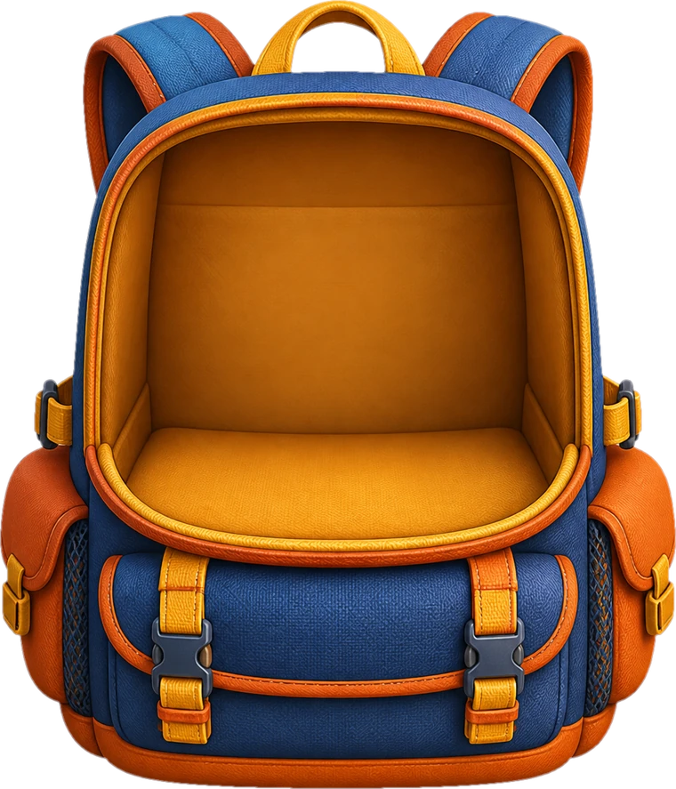
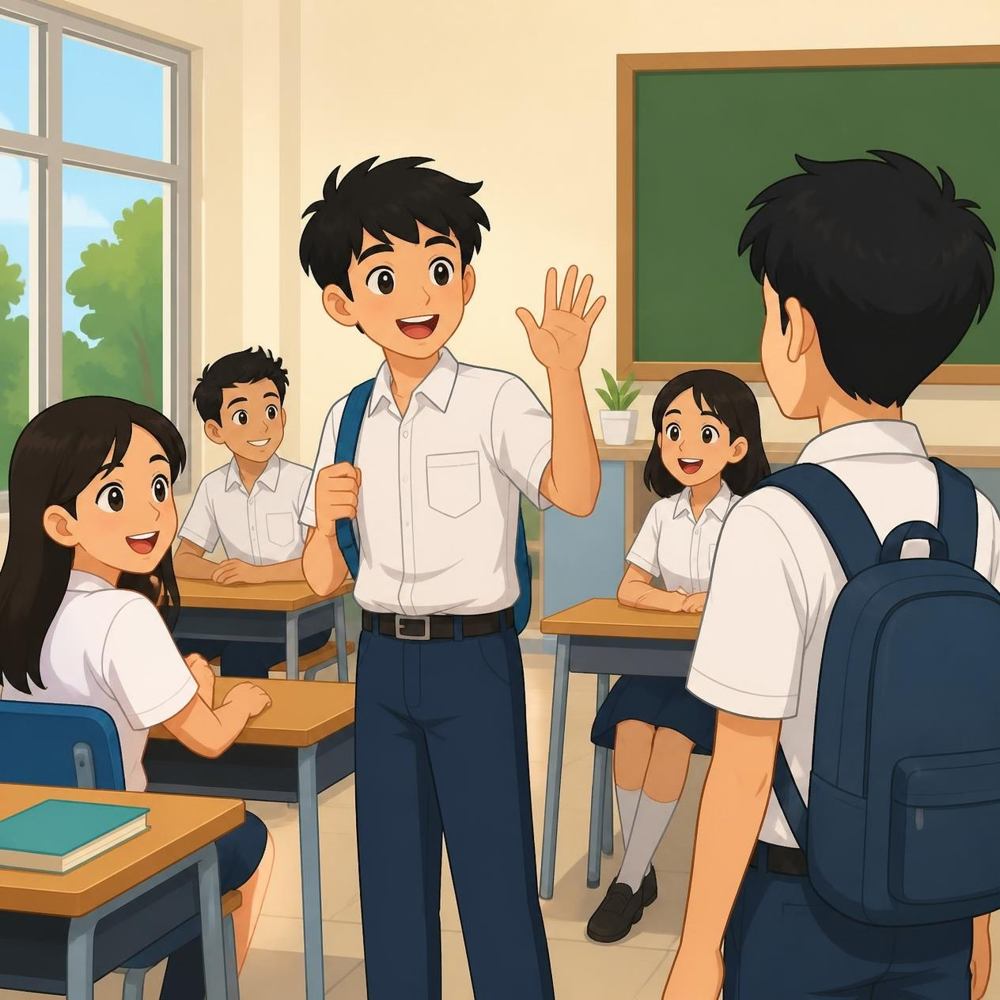

PERSONALITY
EXPLORER
Kenali Kecenderunganmu lewat Video Interaktif AI
Tonton situasi dalam video AI, lalu selesaikan misi serunya!
Dikembangkan oleh · ·
Gambar dan video dalam game ini dibuat dengan bantuan AI.
Personality Explorer
Video Interaktif AI
Game edukasi video interaktif berbasis AI ini membantu kamu mengenali kecenderungan kepribadian melalui video situasi sehari-hari dan pilihan responsmu.
Cara Bermain
- Ronde 1: tonton video situasi dan pilih jawabanmu (5 soal).
- Ronde 2: selesaikan 5 misi interaktif, mulai dari berlari mengejar pilihan sampai menggeser kartu.
- Pilih yang paling sesuai dengan dirimu, bukan yang menurutmu benar.
- Setelah 10 soal, lihat hasil kecenderunganmu.
Ketuk untuk mengenal tiap kecenderungan:
Tidak ada jawaban benar atau salah. Jawablah sesuai dengan dirimu.
Contoh Kecenderungannya
Setiap orang bisa memiliki sedikit dari ketiganya. Ini bukan label tetap dan bukan diagnosis.
Ilustrasi dan video dibuat dengan bantuan AI.
Video Pilihan A
Perhatikan video ilustrasi ini terlebih dahulu.
Ilustrasi dan video dibuat dengan bantuan AI.
Belum perlu memilih jawaban. Lanjutkan untuk melihat video berikutnya.
Pilih Jawabanmu
Ketuk video yang paling sesuai dengan dirimu.
Ilustrasi dan video dibuat dengan bantuan AI.
Misi Interaktif
Kamu sudah menonton 5 situasi. Sekarang saatnya beraksi! Ada 5 misi seru yang meminta kamu berlari, membalas, memilih, mengatur, dan menggeser.
Bersepeda melewati satu hari Sabtu!
Di setiap persimpangan ada 3 kegiatan, satu di tiap jalur. Kayuh sepedamu ke kegiatan yang paling kamu suka. Lompati rintangan yang rendah dengan panah atas, hindari yang tinggi, dan coba trik freestyle dengan panah bawah!

Seret barang ke dalam tas.
Seberapa cocok pernyataan ini denganmu?
Geser kartu ke kanan (Aku banget), ke kiri (Bukan aku), atau tekan Kadang-kadang.

Ilustrasi dibuat dengan bantuan AI.
Pengembang & Keterangan AI
Pengembang
- Tahun pengembangan:
Keterangan Penggunaan AI
Video situasi, video pilihan jawaban, serta gambar ilustrasi dalam game ini dibuat dengan bantuan kecerdasan buatan (AI). Tokoh yang tampil adalah ilustrasi rekaan, bukan orang sebenarnya. Karena dibuat AI, sebagian detail gambar mungkin tidak sempurna. Aplikasi AI yang digunakan: .
Sumber Aset
| Aset | Cara pembuatan |
|---|---|
| Video situasi dan video pilihan (Ronde 1) serta video halaman utama | Dibuat dengan AI (video dari gambar ilustrasi) |
| Gambar ilustrasi soal, sampul, dan hasil akhir | Dibuat dengan AI (gambar) |
| Latar jalan, pelari bersepeda, rintangan, dan efek (Lari Akhir Pekan) | Dibuat dengan Canva AI; jalan tiga jalur digambar oleh kode |
| Ikon kegiatan, gambar barang, dan latar pulau (Tas Kemah) | Grafik vektor (SVG) dan gambar buatan pengembang |
| Musik latar dan efek suara | Disintesis langsung oleh kode di browser (WebAudio); tanpa sampel audio pihak ketiga |
| Huruf | Arial (huruf bawaan perangkat) |
| Program permainan | HTML, CSS, dan JavaScript tanpa pustaka luar; berjalan tanpa internet |
Hasil game hanya menunjukkan kecenderungan berdasarkan jawaban, bukan diagnosis kepribadian profesional.
Personality Explorer: Video Interaktif AI
Tentang media
- Sasaran: siswa SMP kelas 7–9.
- Tujuan: membantu siswa mengenali kecenderungan introvert, ekstrovert, dan ambivert melalui situasi sehari-hari.
- Bukan tes diagnostik dan tidak ada jawaban benar atau salah.
Persiapan
- Buka index.html di browser terbaru (Chrome, Edge, Firefox, atau Safari).
- Folder videos harus berada di samping index.html.
- Bisa di PC, tablet, atau HP. Tidak perlu internet.
- Nyalakan suara. Ketuk layar sekali agar musik berbunyi; tombol speaker di pojok kanan atas untuk membisukan.
Alur permainan
- Ronde 1 (soal 1–5): tonton video situasi dan tiga video pilihan, lalu pilih satu.
- Ronde 2 (soal 6–10): lima misi: Lari Akhir Pekan, Chat Grup Kelas, Tas Kemah Pulau, Baterai Sosial, Kartu Aku Banget.
- Hasil: kecenderungan terbanyak, skor tiga kecenderungan, dan penjelasannya.
Memaknai hasil
- Setiap soal menyumbang satu poin pada satu kecenderungan (total 10).
- Poin terbanyak menjadi hasil. Bila seri, hasilnya campuran / seimbang.
- Skor dan bintang di game lari hanya hiburan dan tidak memengaruhi hasil.
- Hasil adalah gambaran kecenderungan saat ini, bukan label tetap.
Saran diskusi kelas
- Situasi mana yang paling membuatmu nyaman? Mengapa?
- Apakah hasilnya sesuai dengan gambaran dirimu?
- Bagaimana kita bisa saling menghargai teman yang berbeda kecenderungan?
Jika ada kendala
- Video tidak tampil: game memakai gambar cadangan; periksa folder videos.
- Tidak ada suara: ketuk layar lalu cek tombol speaker dan volume perangkat.
- Game lari terasa berat: tutup tab lain atau muat ulang halaman.
- Mengulang: tombol MAIN LAGI di layar hasil.